05.1 마르코프 결정 과정(MDP)이란?
마르코프 성질(Markov Property)이라는 확률적 바닥 위에, 주체적으로 미래를 개척하는 의사결정(Decision)의 날개를 달아준 수학적 프레임워크가 바로 마르코프 결정 과정(Markov Decision Process, MDP)입니다.
에이전트와 환경이 상태, 행동, 보상을 끊임없이 주고받는 강화학습의 핵심 사이클을 지니 요정과 도로시의 모험 속 대화를 통해 쉽고 명쾌하게 정복해 봅시다!

그림 05-1-1 오즈의 숲길(Environment)에서 상태(노란 벽돌길)를 관찰하고 행동(이동)을 결정하여 보상(황금 열쇠)을 찾아 나서는 도로시와 지니
05.1.1 강화학습과 환경의 동적 변화
우리는 앞서 4장에서 스스로 흘러가는 구름처럼 관찰자의 개입 없이 확률적으로 상태가 바뀌는 마르코프 과정(Markov Process)을 배웠습니다.
하지만 강화학습의 세계는 단순히 흘러가는 세상을 구경만 하는 곳이 아닙니다.
마르코프 결정 과정Markov Decision Process, MDP에서 ‘결정 과정(Decision Process)’이란 ‘에이전트가 환경과 끊임없이 상호작용하며 자신의 목표를 이루기 위해 최선의 행동을 능동적으로 결정하는 연속적인 과정’을 뜻합니다.
👧 도로시: “지니야! 지난 4장에서 배운 날씨 마르코프 체인은 비가 올지 맑을지 확률적으로 지켜보기만 했잖아? 그런데 강화학습에서는 내가 직접 우산을 챙기거나 길을 골라 걸어갈 수 있는 거야?”
🧚 지니: “맞아, 도로시! 날씨처럼 외부에서 정해진 확률대로 저절로 변하는 시스템을 마르코프 과정(MP)이라고 한다면, 우리가 ‘어떤 행동(Action)을 취할 것인가’를 능동적으로 결정하여 세상의 미래 상태와 보상을 직접 바꾸어 나가는 시스템을 마르코프 결정 과정(MDP)이라고 불러!”
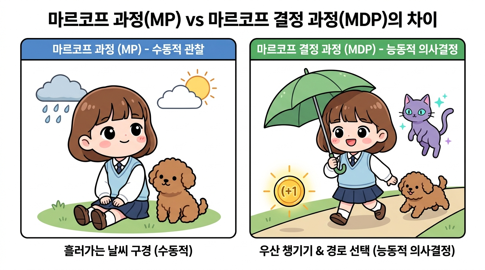
그림 05-1-2 마르코프 과정(MP) vs 마르코프 결정 과정(MDP)의 핵심 차이: 수동적 관찰(날씨 구경) vs 능동적 의사결정(우산 챙기기 & 길 선택)
05.1.2 그리드 월드로 이해하는 상태, 행동, 보상
에이전트가 자신의 행동에 따라 환경의 상태를 실시간으로 바꾸어 나가는 원리를 이해하기 위해 가장 직관적인 그리드 월드(Grid World) 예시로 시작해 봅시다.
👧 도로시: “지니야! ‘행동에 따라 환경의 상태를 실시간으로 바꾼다’는 말이 정말 흥미진진해! 세상을 가만히 관찰하기만 하는 것과 내가 행동하는 것은 구체적으로 어떻게 달라?”
🧚 지니: “비디오 게임을 떠올려 보면 아주 쉬워, 도로시!
- 1단계: 상태 관찰 (대기 상태, St): 네가 게임패드의 조이스틱을 가만히 두고 있으면 화면 속 캐릭터도 멈춰 있고 세상의 상태도 그대로 멈춰 있지.
- 2단계: 실시간 행동 실행 (At): 하지만 네가 ‘오른쪽으로 한 걸음 이동!’ 하고 조이스틱을 꺾는 순간(행동 At),
- 3단계: 실시간 상태 전이 & 피드백 (St+1, Rt): 그 즉시 환경 속 캐릭터의 위치 좌표가 다음 칸(St+1)으로 바뀌고, 그 자리에 있던 달콤한 사과(+1 보상)를 얻거나 새로운 장애물을 마주하게 된단다!
즉, ‘에이전트가 내리는 행동(At)이 원인이 되어 환경의 다음 상태(St+1)를 실시간으로 직접 바꾸고, 그렇게 바뀐 새로운 상태가 다시 나의 다음 행동을 이끄는 실시간 쌍방향 인과 관계’가 바로 강화학습의 본질이란다!”
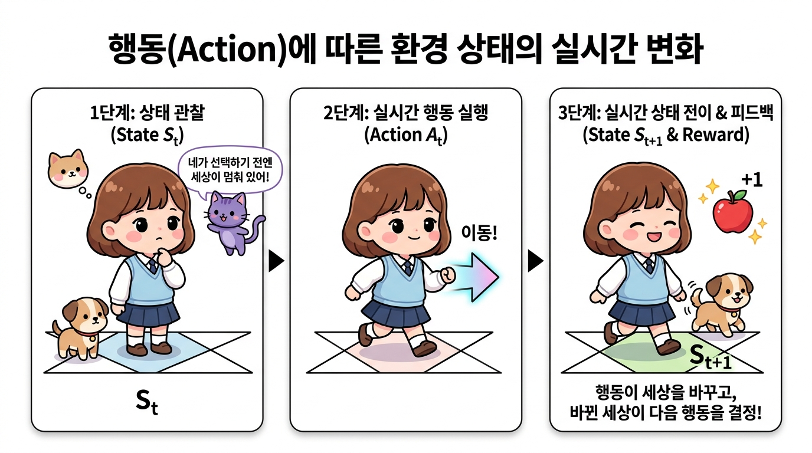
그림 05-1-3 행동(Action)에 따른 환경 상태의 실시간 변화 메커니즘: 상태 관찰(St) → 실시간 행동 실행(At) → 상태 전이(St+1) 및 즉각적 보상 피드백
👧 도로시: “지니야! 복잡한 인공지능 강화학습 세상을 우리가 쉽게 이해할 수 있는 놀이터 같은 곳은 없을까?”
🧚 지니: “좋은 질문이야, 도로시! 바로 그런 학습을 위해 만들어진 대표적인 가상 실험실이 바로 그리드 월드(Grid World)란다. 바둑판처럼 네모난 타일 격자로 이루어진 세상에서, 우리가 한 걸음 걸을 때마다 상태가 바뀌고 사과나 보물상자 같은 보상을 탐색할 수 있지!”
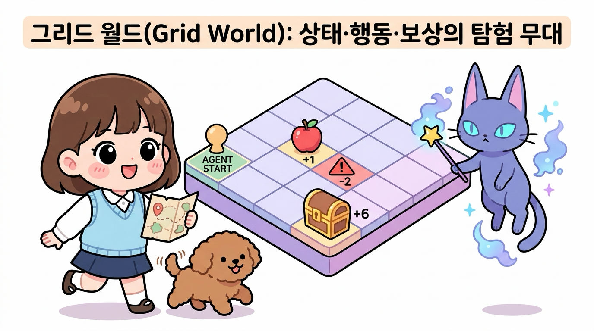
그림 05-1-4 그리드 월드(Grid World)의 탐험 시작: 상태(격자 위치), 행동(이동 방향), 보상(사과와 보물)으로 구성된 강화학습의 기초 실험 환경
05.1.2.1 에이전트와 환경, 보상의 정의
격자grid로 이루어진 1차원 세상에 로봇(에이전트)이 서 있습니다. 로봇은 격자 위에서 왼쪽으로 이동(Left)하거나 오른쪽으로 이동(Right)할 수 있습니다.
- 에이전트(Agent): 의사결정의 주체인 로봇(도로시와 토토)
- 환경(Environment): 에이전트가 탐험하는 격자판 세계
- 행동(Action, A): 로봇이 취할 수 있는 선택지 (왼쪽 또는 오른쪽 이동)
- 상태(State, S): 로봇이 현재 위치하고 있는 격자 번호
- 보상(Reward, R): 로봇이 특정 칸에 도달했을 때 환경으로부터 주어지는 즉각적인 피드백 (사과: +1, 폭탄: -2, 빈칸: 0)
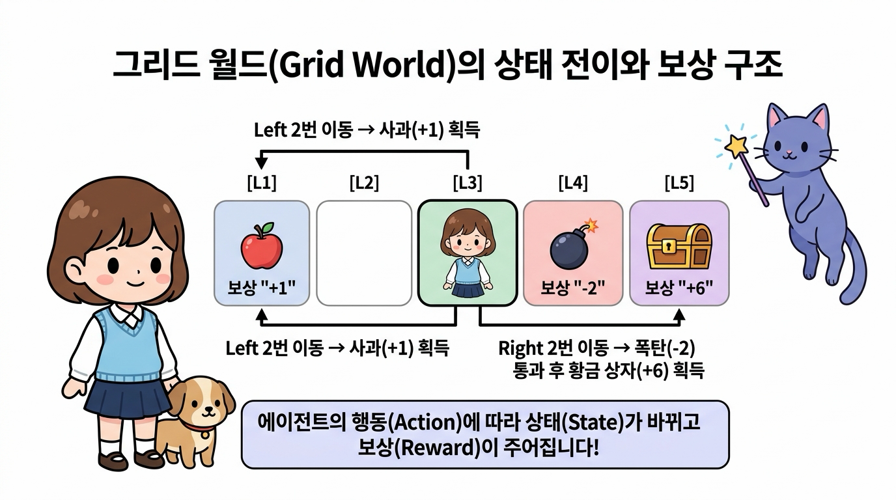
그림 05-1-5 그리드 월드에서의 상태 정의와 보상 요소
05.1.2.2 타임 스텝과 상태 전이(State Transition)
에이전트가 행동을 한 번 실행할 때마다 세상의 시간이 한 단위씩 흐르며, 상황(상태)이 새롭게 바뀝니다.
⏱️ 타임 스텝(Time Step, t): 에이전트가 환경을 관찰하고 다음 행동을 결정하여 실행하는 이산적인 시간 단위(t = 0, 1, 2, …)입니다. 문제에 따라 1초일 수도, 1분일 수도, 바둑의 한 수일 수도 있습니다.
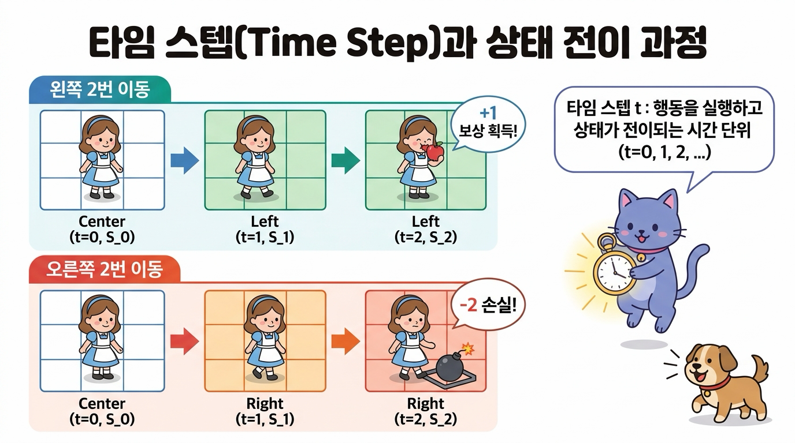
그림 05-1-6 타임 스텝 t의 흐름에 따른 상태 전이와 보상 획득 과정 (왼쪽 이동 경로 vs 오른쪽 이동 경로)
예를 들어 가운데 칸에서 시작하여 왼쪽으로 두 번 이동하면 사과를 먹고 +1의 보상을 얻습니다. 반대로 오른쪽으로 두 번 이동하면 폭탄을 밟아 -2의 손실을 입습니다.
05.1.2.3 단기 보상 vs 장기 누적 보상의 딜레마
이제 또 다른 세상(World B)을 생각해 봅시다:
- 왼쪽 끝 칸: 보상 +1 (작은 사과)
- 오른쪽 바로 다음 칸: 보상 -2 (위험한 가시 함정/폭탄)
- 오른쪽 끝 칸: 보상 +6 (커다란 황금 사과 더미)
🐶 토토: “멍멍! 오른쪽으로 한 칸 가면 -2 폭탄을 밟으니까 당장 아프잖아! 그냥 왼쪽으로 가서 안전하게 +1 사과를 먹는 게 낫지 않아?”
👧 도로시: “하지만 토토야, 눈앞의 -2 폭탄을 참고 오른쪽으로 한 번 더 전진하면 무려 +6짜리 황금 사과를 얻을 수 있어! (-2) + (+6) = +4니까, 왼쪽으로 가서 얻는 +1보다 총합이 훨씬 크잖아!”
🧚 지니: “정답이야 도로시! 강화학습의 에이전트는 ‘눈앞의 즉각적인 보상’에 일희일비하지 않고, ‘앞으로 얻게 될 미래 보상들의 총합(Cumulative Return)’을 극대화하도록 행동해야 해. 이것이 바로 강화학습과 단순 탐욕 알고리즘(Greedy)의 결정적 차이란다.”
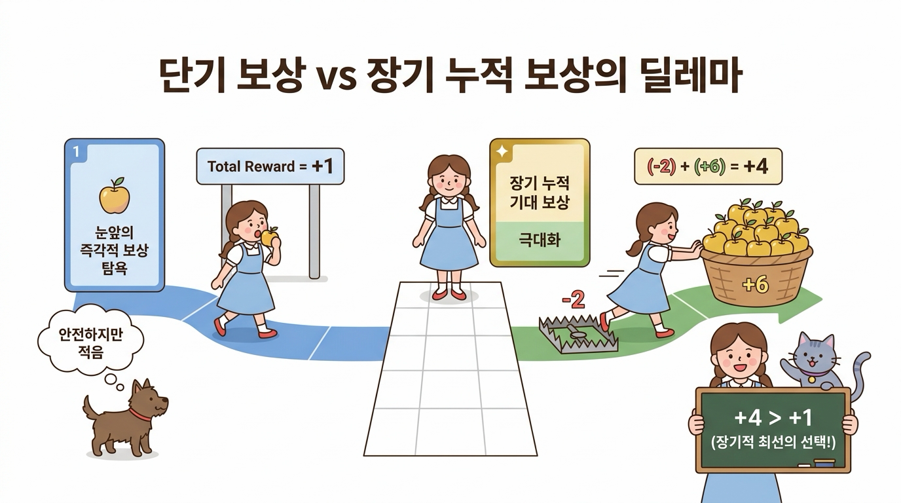
그림 05-1-7 단기 보상 vs 장기 누적 보상의 딜레마: 눈앞의 작은 사과(+1) 대신 함정(-2) 너머의 황금 사과 바구니(+6)를 얻어 총합(+4)을 극대화하는 최선의 선택
05.1.3 에이전트와 환경의 상호작용 피드백 루프
MDP는 에이전트와 환경이 고립되어 있지 않고 끊임없이 정보를 주고받는 동적 폐루프(Closed-Loop Feedback System)로 구성됩니다.
👧 도로시: “지니야! ‘동적 폐루프’라는 말이 조금 어렵게 들려. 그냥 혼자서 정해진 길을 가는 것과 무엇이 다른 거야?”
🧚 지니: “좋은 질문이야! 눈을 가리고 정해진 계획대로만 걷는 것을 개방 루프(Open-Loop)라고 한다면, 눈을 크게 뜨고 ‘현재 상태를 관찰하고 → 행동을 취하고 → 세상의 피드백(상태와 보상)을 받아 다음 행동을 유연하게 수정하는’ 끝없는 소통의 순환 구조를 동적 폐루프(Closed-Loop)라고 한단다!”
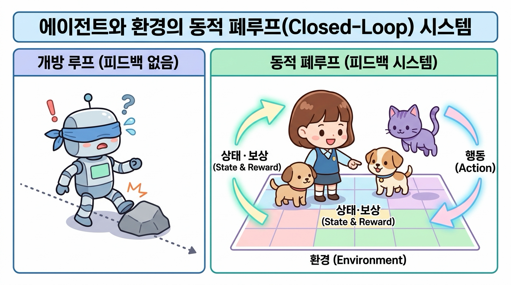
그림 05-1-8 에이전트와 환경의 상호작용 비교: 외부 환경의 피드백이 없는 개방 루프(Open-Loop) vs 상태와 보상을 실시간으로 주고받는 동적 폐루프(Closed-Loop)
05.1.3.1 MDP 상호작용 3단계 사이클
각 타임 스텝 t마다 에이전트와 환경은 다음의 3단계를 끊임없이 반복합니다.
- 상태 관찰 (State Observation): 에이전트는 환경의 현재 상태 St를 관찰합니다.
- 행동 실행 (Action Execution): 에이전트는 정책(Policy)에 따라 선택한 행동 At를 환경에 가합니다.
- 보상 및 다음 상태 반환 (Reward & Next State): 환경은 행동 At의 결과로 에이전트에게 보상 Rt를 지급하고, 새로운 상태 St+1로 전이시켜 에이전트에게 알려줍니다.
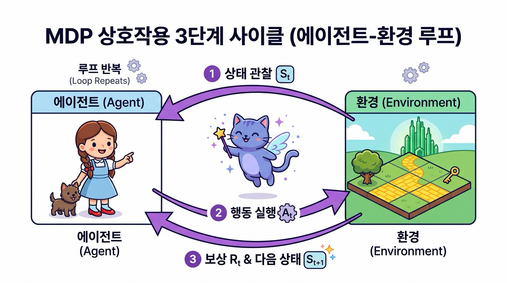
그림 05-1-9 MDP 에이전트와 환경의 3단계 상호작용 폐루프 (Observation → Action → Reward & Next State)
05.1.3.2 시간의 흐름에 따른 상호작용 궤적 (Trajectory)
이러한 상호작용의 연속은 시간의 흐름에 따라 다음과 같은 궤적(Trajectory) 또는 에피소드 시계열 데이터를 생성합니다:
- S0: 에이전트가 처음 마주한 시작 상태
- A0: 시작 상태에서 내린 첫 번째 결정 행동
- R0: 첫 번째 행동으로 획득한 보상
- S1: 시간 t = 1에서 도착한 새로운 상태
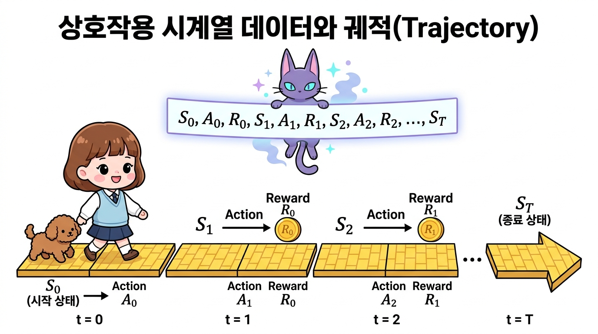
그림 05-1-10 시간의 흐름(t = 0, 1, 2, …, T)에 따른 상호작용 시계열 데이터와 상태-행동-보상 궤적(Trajectory)
05.1.4 보상 획득 시점의 표기법 (Rt vs Rt+1)
강화학습 교재나 논문을 읽다 보면 보상이 Rt로 적혀 있기도 하고, Rt+1로 적혀 있기도 합니다. 이는 수학적 본질이 다른 것이 아니라 ‘시간 인덱스를 붙이는 관점의 차이’일 뿐입니다.
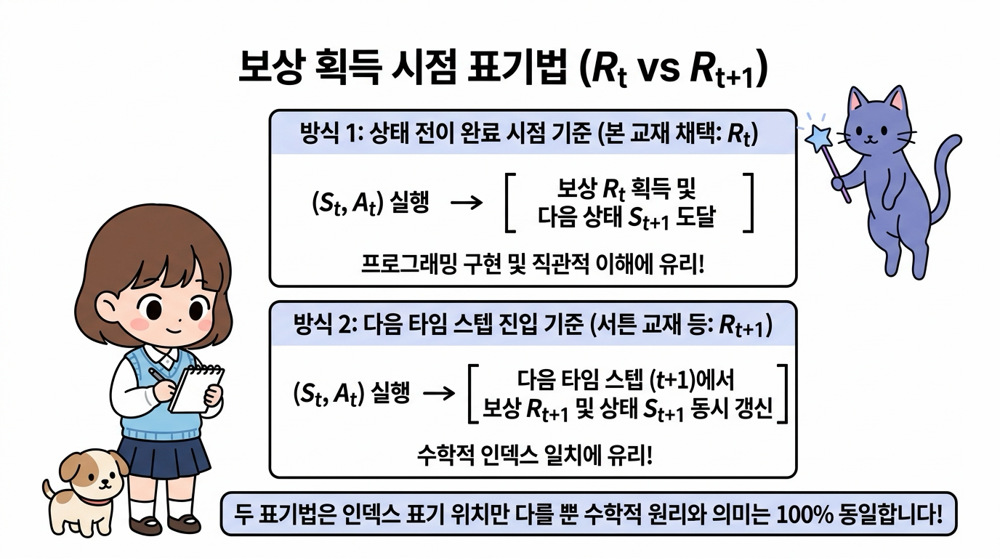
그림 05-1-11 보상 표기법 비교: 행동 시점 기준(Rt) vs 도착 상태 시점 기준(Rt+1)
| 구분 | 프로그래밍 중심 표기법 (Rt) | 수학/이론 중심 표기법 (Rt+1) |
|---|---|---|
| 관점 | “시간 t에서 행동 At를 취해서 얻은 결과 보상” | “행동 At의 결과로 시간 t+1에 도달하여 수령한 보상” |
| 전이 튜플 | (St, At, Rt, St+1) | (St, At, Rt+1, St+1) |
| 장점 | 파이썬 딕셔너리나 코드 루프 작성 시 t 인덱스가 일치하여 직관적임 | 시간 t+1의 정보(상태와 보상)가 동일한 타임스탬프를 공유하여 수학적으로 깔끔함 |
| 대표 문헌 | 본 교재 및 다수의 강화학습 실습 코드 | 서튼(Sutton) & 바토(Barto) 강화학습 교과서 (2판) |
🧚 지니의 팁: “우리 책에서는 파이썬 코딩과 직관적인 이해를 돕기 위해 St에서 At를 실행하여 Rt를 받고 St+1로 간다는 표기법을 기본으로 사용해! 하지만 다른 논문이나 서적에서 Rt+1을 보더라도 ‘아, 한 스텝 뒤에 도착해서 받는 보상이구나’ 하고 편안하게 이해하면 된단다.”
05.1.5 핵심 요약
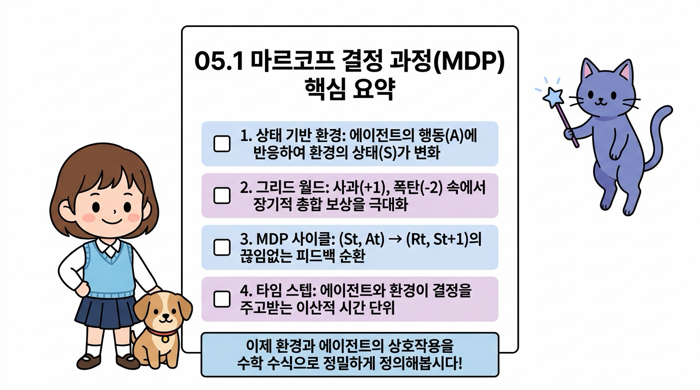
그림 05-1-12 05.1 마르코프 결정 과정(MDP) 핵심 개념 요약 인포그래픽
- 마르코프 결정 과정(MDP): 마르코프 성질에 에이전트의 주체적인 행동(Action)과 목표 달성을 위한 보상(Reward)이 결합된 의사결정 모델입니다.
- MDP 4대 요소: 상태(State, S), 행동(Action, A), 보상(Reward, R), 상태 전이(State Transition, P 또는 f)로 구성됩니다.
- 누적 보상 극대화: 강화학습의 궁극적인 목표는 눈앞의 즉각적인 보상뿐만 아니라 미래에 얻게 될 장기적인 총 보상을 최대화하는 것입니다.
- 상호작용 루프: 에이전트는 환경의 상태 St를 관찰하고 행동 At를 수행하며, 환경은 보상 Rt와 다음 상태 St+1을 반환하는 상호작용 사이클을 무한히 반복합니다.
다음 05.2절에서는 이러한 에이전트와 환경의 상호작용을 수학적 기호와 수식(전이 함수, 보상 함수, 정책)으로 엄밀하게 정의해 보겠습니다!